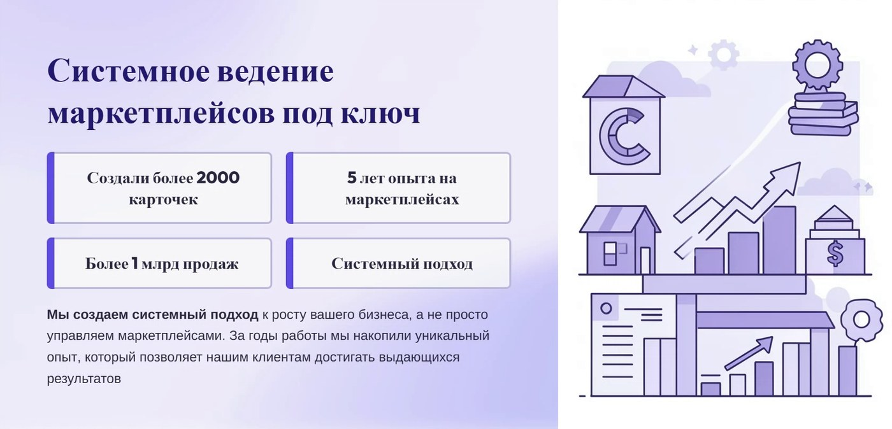
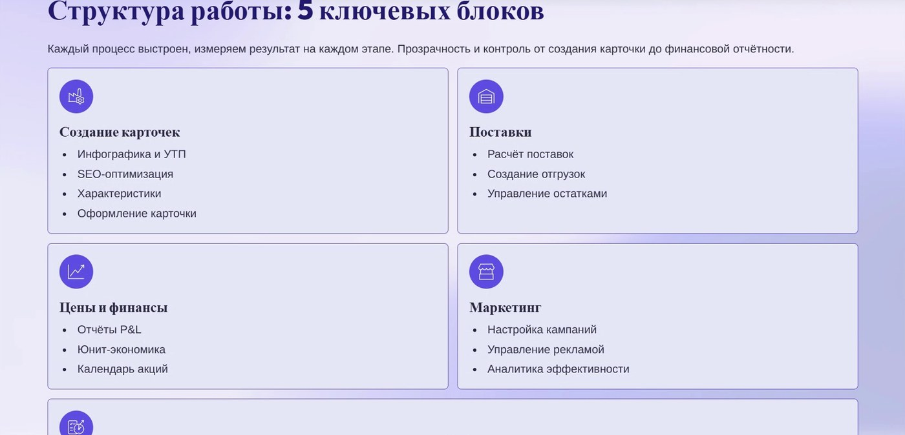
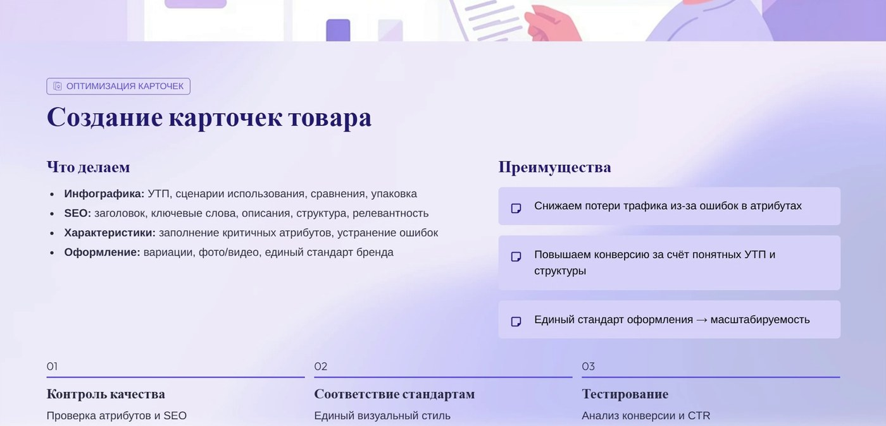
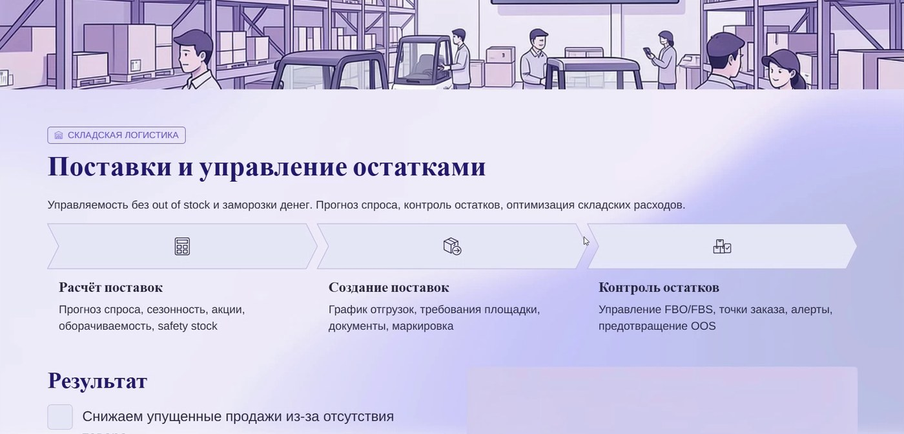
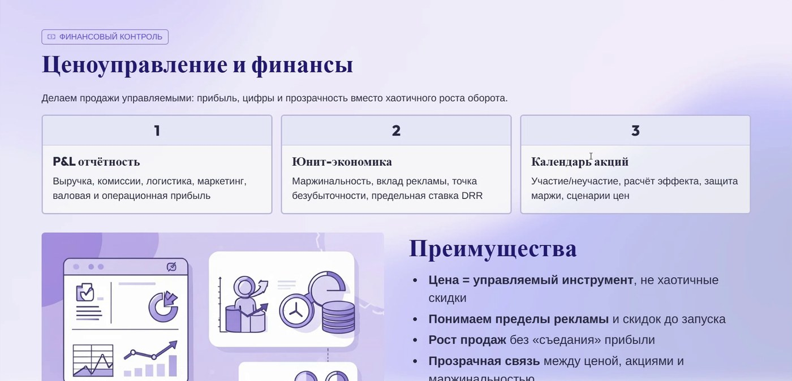
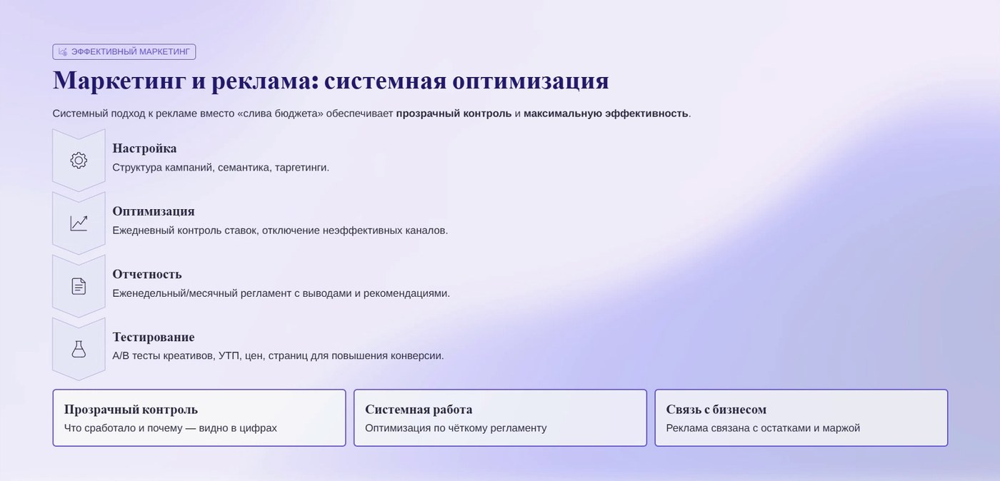
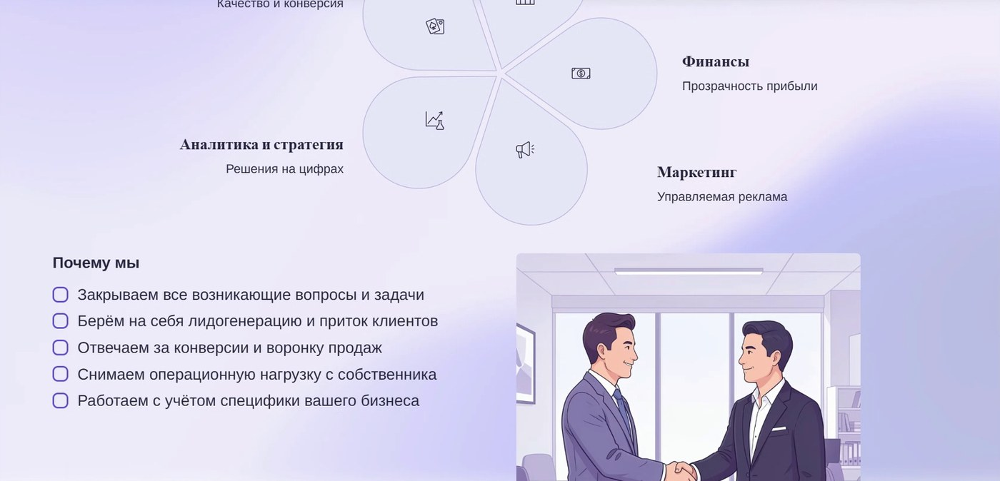
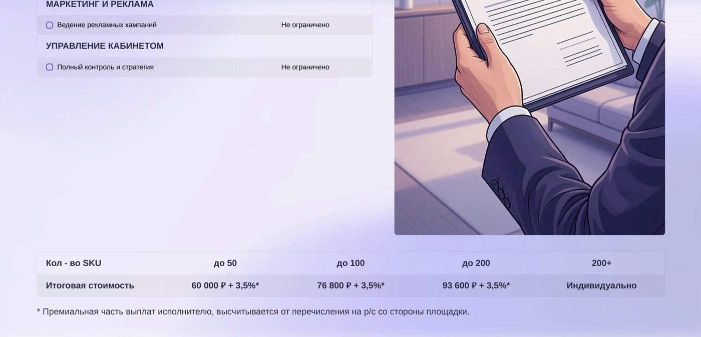

Как проводить аудит-встречу (созвон) с клиентом. Ведение магазинов на маркетплейсах (Wildberries / Ozon) — «под ключ». Полное пошаговое руководство: что говорить, на каком слайде, как проводить аудит карточки, какие правила и цифры, как отрабатывать возражения.
Этот документ — рабочий сценарий продавца. Он повторяет структуру нашей презентации и логику встречи от начала до конца. Изучи его, а первые два-три созвона держи открытым рядом.
Три файла у нас открыты в браузере всегда и не закрываются:
Клиент обычно скидывает ссылку на одну карточку, но по сути делится всем магазином. До созвона быстро пробегаемся:
Встреча идёт по презентации сверху вниз. Порядок этапов:
Ниже — что показываем и что говорим на каждом шаге презентации. Синие блоки можно зачитывать почти дословно.
Ничего — презентацию пока НЕ включаем. Просто здороваемся, представляемся, общаемся.
«Давайте так — хочу максимально погрузиться в ваш магазин. Расскажите поподробнее: что сейчас необходимо сделать, как вели магазин, что происходило, какие цели и задачи, какую проблему хотели бы закрыть — чтобы я дал вам максимальную пользу.»
(Здесь задаём дополнительные вопросы, погружаемся, максимально интересуемся всеми процессами, спрашиваем, какую роль играет человек, который с нами на созвоне, и так далее.)
«Сейчас я всё расскажу, проведём вместе аналитику, покажу, как мы работаем, после чего обсудим цены и дальнейшее сотрудничество.»

«Кратко о нас: 5 лет работаем на маркетплейсах, полностью под ключ — берём на себя выполнение всех задач по работе на маркетплейсах.»
«В первую очередь мы сами селлеры: долгое время торговали собственными товарами, были топ-1 в нише детского нижнего белья, крупнейшими поставщиками турецкого бренда Danella в Россию. Далее торговали женским нижним бельём, отшитым под заказ в Китае. После чего начали работать с российскими производителями и дистрибьюторами — и сейчас обеспечиваем полную работу отдела сбыта продукции для производителей и дистрибьюторов на маркетплейсе.»

«Чтобы сейчас углублённо разобраться, проясним несколько моментов. За результат на маркетплейсе отвечают 5 основных направлений: создание карточек, работа с поставками, работа с ценами и финансами, маркетинг и, конечно, отдел контроля и развития.»
«Маркетплейс — это система ранжирования ваших товаров в поиске: он стремится выдать потребителю максимально подходящий товар и показать его максимально подходящей аудитории. В этой формуле ранжирования есть переменные, и задача каждого из наших отделов — повлиять на эту формулу, чтобы продвинуть вас наверх: получать максимум заказов и просмотров и наладить воронку продаж.»
«Сейчас по каждому направлению пробежимся и посмотрим, что происходит у вас на карточке и что стоило бы исправить.»
| Направление | Что делает / за что отвечает |
|---|---|
| 1. Создание карточек | Инфографика, SEO, характеристики, оформление магазина |
| 2. Поставки и остатки | Распределение по складам, оборачиваемость, прогноз поставок |
| 3. Цены и финансы | Юнит-экономика, календарь акций, отчёт о прибылях и убытках, ABC-анализ |
| 4. Маркетинг и реклама | Трафик за минимальный бюджет, настройка по всей воронке, защита от слива |
| 5. Отдел контроля и развития | Контроль качества, коммуникация, развитие ассортимента |
Это ядро встречи. Демонстрируем экран, заходим в карточку клиента и в MPStats, идём по отделам. По ходу — «то, что мы берём на себя».
«Я вначале всегда смотрю на категорию — есть ли здесь вообще выручка, можем ли мы с вами заработать.»
«Ваши топ-10 конкурентов имеют выручку 11,2 млн за 30 дней — ниша отличная, здесь 100% можно зарабатывать, просто нужен правильный системный подход.»

Этот отдел работает на две метрики: CTR и SEO-охват. Плюс характеристики/категории и оформление.
«Этот отдел направлен на улучшение двух метрик, одна из них — CTR. CTR — это процентное соотношение показов к кликам: сколько человек переходит на карточку после того, как её увидели.»
«От этой конверсии зависит, насколько окупаема реклама. И, что немаловажно, CTR влияет на ранжирование: после отключения рекламы при плохом CTR карточка сразу падает вниз.»
«Чтобы такого не происходило: прорабатываем инфографику, подбираем УТП, отсматриваем всех конкурентов, создаём техзадания. Только после этого делаем первичный макет, тестируем, и если конверсия хорошая — оставляем; если нет — переделываем. Это сильно экономит вам деньги на рекламе.»
«Моё мнение субъективное. Чтобы понять объективно, насколько хорошо отрабатывает инфографика, надо зайти в рекламу, протестировать и посмотреть конверсии.»
Если зацепиться не за что: «Инфографика в целом неплохая, мне нравится, но выводы будем делать только после тестов в рекламе.»
«Задача инфографики, особенно первого фото, — сразу ответить на все запросы потребителя. Человек просматривает максимум 20 товаров из поиска: чем понятнее и информативнее товар, тем выше вероятность клика.»
«Этот же отдел меняет описание и характеристики — это напрямую влияет на количество SEO-запросов, по которым вас находят.»
«SEO-ключи — это слова, по которым вас можно найти на маркетплейсе. У вас сейчас 277 ключей.»
«Если бы вы стояли на первых местах по каждому запросу вместе с конкурентом, он всё равно получал бы в 3 раза больше продаж — просто потому, что правильно оформлены карточка, описание и название.»
«Важно не только количество ключей, но и их частотность. По топ-100 запросам у конкурента частотность в 5,5 раза больше. Всё это мы прорабатываем и работаем с SEO регулярно.»
«До сих пор ~15% пользователей в поиске используют фильтры для подбора товара. Если характеристики заполнены неправильно — вы неправильно фильтруетесь и теряете продажи.»
«Правильно заполненные характеристики влияют на количество категорий, в которых показывается карточка. Помимо основной категории мы можем добавить дополнительные — и получать там трафик по сути бесплатно.»
«Когда будем расширяться — при необходимости оформим весь магазин в едином стиле. Тогда при нескольких карточках в топе человек сразу вас узнаёт как один бренд, и вы получаете дополнительные продажи за счёт узнаваемости.»
«Всё, что касается карточки — её создания и правильного заполнения по определённым правилам, — мы берём на себя. Это снижает потери трафика, повышает конверсии и даёт максимум просмотров по всем возможным SEO-ключам.»

«Основная задача — распределить вас на все возможные склады, чтобы получить максимальную скорость доставки до клиента. При этом важно поддерживать динамику оборачиваемости — обычно около 60 дней, чтобы не перегружать склады, не замораживать деньги в неликвиде и одновременно не уходить в автосток.»
«Что делаем: еженедельно вручную считаем скорость заказов по каждому артикулу, делим на остатки и получаем, за сколько дней закончится товар. Так заранее прогнозируем, сколько и куда поставить.»
«Мы перепробовали много сервисов расчёта поставок (в т.ч. „Маяк“) — все подтягивают данные из бигдаты или по API, и там всё работает криво. А на поставках нужна точность: это экономит деньги на хранении и даёт буст к ранжированию. Поэтому считаем вручную, скачивая отчёты строго из вашего кабинета.»

Один из самых важных и больших блоков. Здесь чаще рассказываем, чем «тыкаем» в карточку.
«Считаем для вас юнит-экономику — инструмент, куда закладываем все расходы площадки, чтобы заранее прогнозировать прибыль, долю рекламных расходов и управлять ценами.»
«В основном используем её для календаря акций: заранее на месяц вперёд составляем календарь цен, чтобы правильно входить и выходить из акций. Сейчас акции влияют на ранжирование и дают буст примерно соразмерно рекламе.»
«Цена стоит стабильно → плавный вход в акцию (снижение) → торгуем → плавный выход „лесенкой“. Так вы никогда не начинаете снижать цену из раза в раз и сохраняете рентабельность.»
«Ни юнит-экономика, ни календарь акций не дают понимания, сколько вы заработали. Чтобы все цифры были прозрачными, наш финансист делает полноценный отчёт о прибылях и убытках.»
«Берём всю детализацию маркетплейса (каждая строка — отдельная транзакция) и сводим в читаемый вид: видны все приходы, расходы площадки, вернувшаяся себестоимость и примерный налог.»
«Это управленческая отчётность — для принятия решений. Цифры совпадают до копейки с приходами на расчётный счёт. Налог закладываем как скажете (в примере 7% от выручки); как сдаёт декларации ваш бухгалтер — отдельная государственная история.»
«Расходы на рекламу выросли со 122 000 до 295 000 ₽: отменили „премиум-про“, увеличили бюджет за клик на 130 000 ₽ — и получили +1 млн ₽ по приходам, сохранив маржинальность 11% и заработав на ~100 000 ₽ больше.»
«Обычно ABC-анализ делают по выручке на карточку. Мы считаем это неправильным: у каждой карточки своя рентабельность.»
«Пример: три карточки с выручкой ~550 000 ₽ каждая, но по валовой прибыли у одной рентабельность 17,7%, у другой 13%. В более рентабельный товар выгоднее вкладывать деньги. Поэтому ABC-анализ делаем по валовой прибыли — это ускоряет выход на хорошие показатели.»
«Бюджеты всегда ограничены, поэтому используем их с максимальной эффективностью. По этому отчёту дальше вместе решаем: расширять ассортимент или сокращать слабые позиции.»
«Все цифры становятся прозрачными. Заранее согласуем желаемую рентабельность и, исходя из неё, простраиваем и контролируем всю ценовую политику — чтобы и продвигаться, и соблюдать маржинальность.»

«Основная задача — за минимальный бюджет получить максимум трафика и сделать так, чтобы он не просто посмотрел карточку, а купил, вписавшись в заранее оговорённую долю рекламных расходов.»
«Используем в основном внутренние инструменты. Настраиваем рекламу не только по CTR, а смотрим по каждому ключу всю воронку: доходят ли клиенты до покупки.»
«Защищаем вас от слива бюджета: если видим пробел в воронке (из показа не переходят в клик, из клика — в корзину, из корзины не выкупают) — сразу останавливаем кампанию, чиним конкретную конверсию и только потом перезапускаем.»
«Бывает: по ключу отличный CTR, но нет заказов; а бывает наоборот — CTR средний, но лучшие переходы в корзину и заказ. Поэтому настраиваем рекламу по конечным показателям (заказам) и следим за долей рекламных расходов.»
«Начинаем продвигаться по низкочастотным ключам, чтобы не пережигать ставки и бюджет. Когда карточка выйдет на показатели — постепенно захватываем высокочастотные ключи. Но сначала нужно наладить SEO — иначе рекламу эффективно не настроить.»
После прохода по отделам подводим итог — что бы точно советовали изменить, «даже если не начнём сотрудничать»:

Переход к бизнес-части. Часто именно здесь у клиента остаётся один вопрос — «сколько это стоит?». Перед ценой проясняем, что берём на себя.
«Прежде чем назову цену — проясним с точки зрения бизнеса и процессов, что берём на себя, что остаётся на вас и как взаимодействуем.»
«Первое: снимаем с вас всю операционную нагрузку — всё, что делается руками в кабинете, делаем мы.»
«Второе: закрываем все возникающие вопросы и задачи. Что-то поменялось на маркетплейсе, не приняли поставку, ошибка в кабинете — просто звоните, решаем.»
«Основное, за что отвечаем, — приток клиентов и то, чтобы они по воронке доходили до покупки. Всё перечисленное выше — инструменты для этого.»
«Лучшие результаты — когда мы берём на себя весь блок продаж, а вы развиваете ассортимент. Раз в 1–2 недели приносите идеи или новые товары, мы их анализируем, советуем, выводим и тестируем. В разрезе квартала так получается добиваться отличных результатов по выручке магазина.»
«Работаем с учётом специфики вашего бизнеса и уже выстроенных процессов — всё согласовываем индивидуально, чтобы вам было комфортно.»

Ниже — тарифы так, как их называем клиенту в разговоре (с учётом скидок). На слайде — прайс-ориентир; вживую чаще даём цену ниже (см. п. 6.3).
| Объём ассортимента | Фиксированная часть в месяц |
|---|---|
| до 5 артикулов | 35 000 ₽ |
| до 20 артикулов | 45 000 ₽ |
| до 50 артикулов | 60 000 ₽ |
| до 100 артикулов | 76 800 ₽ (ориентир; часто закрываем со скидкой) |
| 150 артикулов | ≈ 76 000 ₽ и выше — согласовывать |
«Помимо фикса берём 3,5% премиальной части — но не от всей выручки, а от перечислений на расчётный счёт за вычетом всех расходов площадки.»
«И даже не со всей суммы: у нас есть порог 500 000 ₽. Только свыше 500 000 ₽ перечислений на расчётный счёт мы берём свой процент.»
«Более того, мы фиксируем ваши текущие перечисления за последние 30 дней и берём 3,5% только с прироста — с разницы между новым результатом и текущим.»
«Если сейчас у вас 1,5 млн на расчётный счёт, а мы сделали 1,7 млн — разница 200 000 ₽. Наша премиальная часть — 3,5% от 200 000 = 7 000 ₽. Эта премия мотивирует всю команду.»
«Работаем официально по договору, как ИП. Оплата строго на расчётный счёт, по предоплате. Всё перечисленное входит в фиксированную стоимость — отдельно оплачивается только работа дизайнера (инфографика).»
«Чтобы не быть голословным, покажу пару кабинетов, с которыми работаем. На этот кабинет мы получили разрешение показывать — в договоре у нас прописана конфиденциальность данных.»
Рассказываем, как всё будет происходить после согласия (часто клиент сам спрашивает «а как дальше?»).
«Регламент ритма описан для уже настроенного магазина. В вашем случае на старте многое делаем в большем объёме (несколько раз перебираем SEO, рекламу), поэтому строго не ограничиваем — работаем от задач: сколько нужно для цели, столько и делаем.»
Если провёл встречу правильно — часть клиентов закрывается сразу. Ниже — типовые вопросы и как отвечать.
«Понимаю. Но цены берём не из головы: один средний менеджер с рынка труда стоит 70–80 000 ₽, а у нас — полная команда квалифицированных специалистов (фонд одной команды по направлению — более 500 000 ₽). Мы предлагаем более квалифицированных сотрудников дешевле, чем нанимать самому.»
«Уточните, что именно у них входит в работы. Многие работают по стандарту агентства — фиксированные N часов, часть услуг отдельно (переделка, поставки — за доплату). У нас нет ограничений по объёму работ и доплат, кроме инфографики.»
«Гарантию на выполнение всех работ даю 100%: то, на что могу прямо повлиять, — все работы будут выполнены в нужном объёме и с отличным качеством.»
«Гарантию на результат честно дать не могу — не буду обманывать. Результат зависит от 4 переменных: (1) самого маркетплейса и текущих показателей карточек, (2) вашей товарной матрицы и спроса, (3) бюджета на рекламу, (4) от нас — качества работы. За квалификацию работ ручаюсь.»
«Результат в любом случае увидите в течение первого месяца — эффект заметен уже через 2–3 недели. Бывает, за первый месяц с 500 000 делаем 2 млн; бывает, к результату идём квартал. На окупаемость проекта я бы закладывал от 1 до 3 месяцев.»
«Мы говорим не о сумме, а о проценте: нормальная доля рекламных расходов — 10–15%, мы стремимся её сократить (есть магазины и <5%). На старте затраты максимальные — надо поднять карточку наверх.»
«Для запуска с нуля я бы заложил 30 000–50 000 ₽, чтобы пошли первые продажи. Дальше бюджет берём из процента от текущих продаж.»
«Заходим в категорию: смотрите, каждый конкурент делает ~1,5 млн за 30 дней. Конечно будет продаваться — нужна система. Сейчас объясню, как.»
«Согласен, выйти сейчас тяжело — нужна система и подход, мы этим и занимаемся. При этом количество новых селлеров сократилось на 20%, а выручка на маркетплейсе выросла на 20%. Наши клиенты выросли примерно на 20% даже без увеличения рекламных бюджетов — за счёт роста рынка.»
«Мы 5 лет работаем, команда — с самого старта. Старшие менеджеры по Ozon и WB имеют большой опыт собственных продаж — сами предприниматели. Людей после одних курсов не берём. И есть предел числа клиентов, который мы ведём, — сверх него не набираем.»
| Вопрос клиента | Короткий ответ |
|---|---|
| Внешний трафик | Не работаем, только внутренний — это наша специализация. Специалистов можем посоветовать. |
| Самовыкупы | Делаем техзадания, органически через Telegram-группы. Через сервисы НЕ делаем (риск бана). На старте нужно 2–3 самовыкупа. |
| Подбор ниши/категории | Категорию товара не подбираем (инициатива клиента). Но внутри выбранной категории проводим аналитику и советуем. |
| Сколько ведёте клиентов | 25 (две команды). Специально немного — ради индивидуальности. |
«Через сервисы самовыкупы не рекомендуем: тестировали новый сервис на своих магазинах — агрессивно выкупили ~15 штук, бана не было; посоветовали клиенту — он сделал 3 самовыкупа и у него отобрали из ПП. Поэтому только раздача/своё сообщество. Года 4 назад самовыкупы работали супер, сейчас почти нет; используем минимально на старте, чтобы задать тенденцию или закрыть плохие отзывы.»
| Услуга | Цена / условия |
|---|---|
| Аудит кабинета | 15 000 ₽ за 1 кабинет. Срок — до 8 рабочих дней. Нужен доступ к кабинету + себестоимость. На выходе — дорожная карта. |
| Часовая консультация | 5 000 ₽ (по конкретному вопросу: реклама/поставки/цены) со специалистом. По предоплате. |
| Инфографика | 4 500 – 6 000 ₽ за карточку (8–10 слайдов). Зависит от исходников, ТЗ, ниши. |
| Инфографика для похожих товаров | 500–1 000 ₽ (если отличается только цвет и т.п.). |
| Рич-контент | Дешевле, если инфографика уже создана. |
| Подбор ниши / аналитика | Проводим (дашборд + Excel). Помогаем выбрать нишу внутри категории клиента. |
«Перепроверим все разделы: правильность заполнения карточек, работу с поставками и распределение по складам, оборачиваемость, цены и участие в акциях, юнит-экономику, отчёт о прибылях и убытках, рекламу и долю рекламных расходов — всю воронку. Руками ничего не меняем — контролируем и пересчитываем показатели, затем созваниваемся и даём детальный план (дорожную карту).»
| Показатель / правило | Значение |
|---|---|
| О нас | 5 лет на маркетплейсах, >2000 карточек, >1 млрд продаж |
| Просмотр в поиске | Клиент смотрит максимум ~20 товаров → надо в топ |
| Фильтры в поиске | ~15% пользователей используют фильтры → важны характеристики |
| Оборачиваемость (норма) | ~60 дней |
| Оборачиваемость (порог понижения) | > 120 дней → маркетплейс понижает |
| Порог скорости доставки | ~32–33 часа (иначе не показывается в регионе) |
| Распределение по складам | прирост выручки до 30% |
| Повышение цены после акции | макс. +1% за 1–2 дня; в среднем +2,5%/нед; >2% за раз → потеря ранжирования |
| ОПиУ | еженедельно + итог за месяц; налог в примере 7% |
| ABC-анализ | по валовой прибыли, не по выручке |
| Доля рекламных расходов (ДРР) | норма 10–15%, стремимся к минимуму (есть <5%) |
| Бюджет на старт рекламы | 30 000–50 000 ₽ |
| Окупаемость проекта | от 1 до 3 месяцев; эффект — уже через 2–3 недели |
| Тарифы (фикс/мес) | до 5 — 35к; до 20 — 45к; до 50 — 60к; до 100 — 76,8к |
| Премиальная часть | 3,5% от перечислений на р/с, только свыше 500 000 ₽ и только с прироста |
| Аудит кабинета | 15 000 ₽, до 8 раб. дней |
| Консультация | 5 000 ₽/час |
| Инфографика | 2 500–4 500 ₽ (8–10 слайдов) |
| Клиентов ведём | 25 (2 команды: Ozon и WB); ёмкость ~40, план до 80–100 |
| Самый крупный клиент | 15 млн ₽/мес |